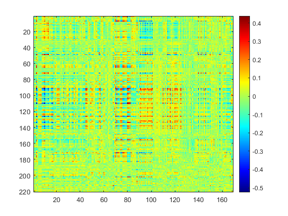
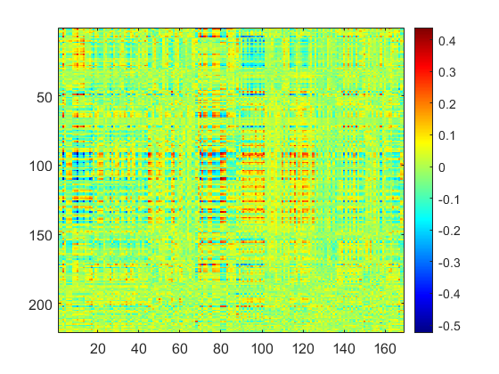
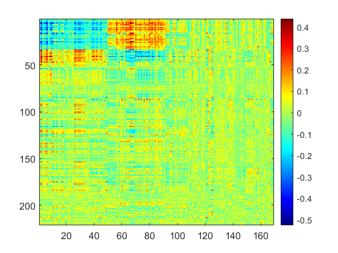
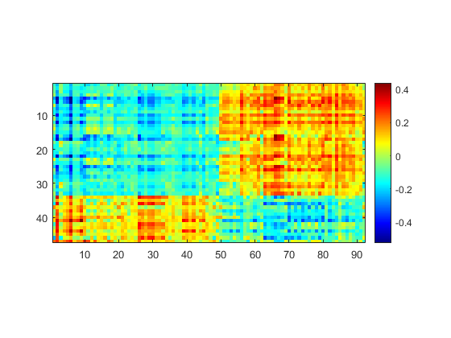
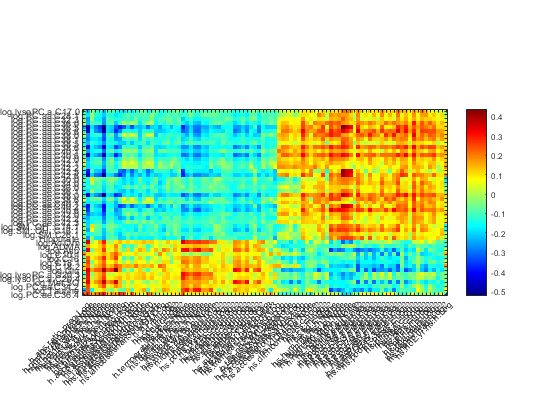
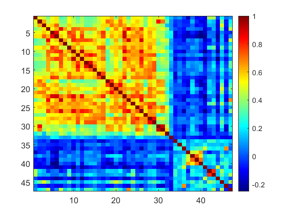
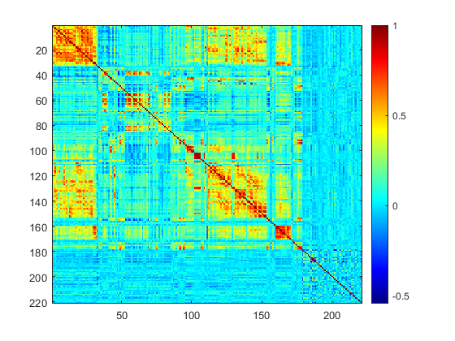
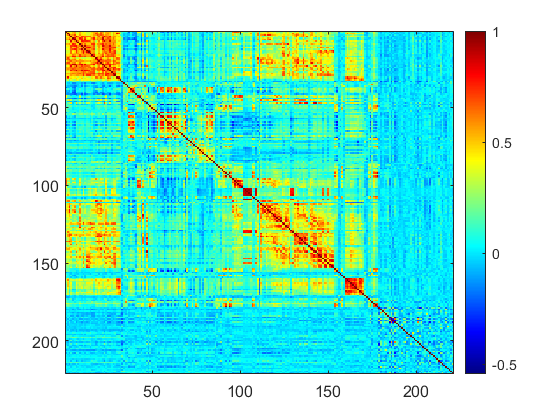
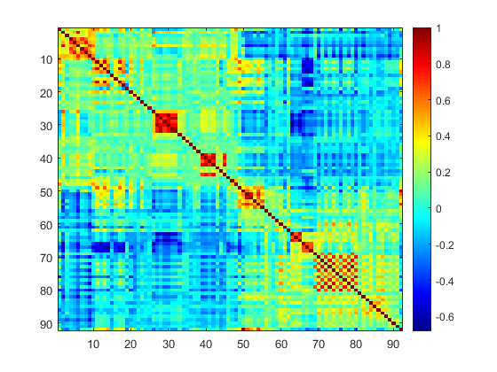
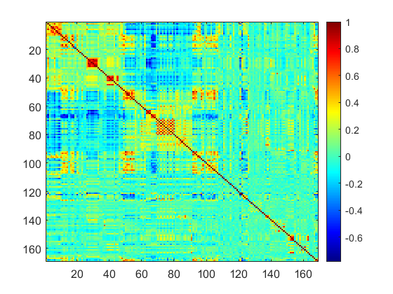

Contents
clear
load('meta_merge.mat')
load('expos_merge.mat')
Draw original matrix
[cor P] = corrcoef([meta' expos']);
cor_bi = cor(1:221,222:390);
figure;imagesc(cor_bi);colormap jet;colorbar;snapnow
set(gca,'FontSize',12)
 
Draw matrix with detected structure
load('expos_meta_res.mat')
s_out = setdiff(1:221,s_in);
t_out = setdiff(1:169,t_in);
list_row = [s_in(Clist1) sort(s_out)];
list_col = [t_in(Clist2) sort(t_out)];
figure;imagesc(cor_bi(list_row,list_col));colormap jet;colorbar;
set(gca,'FontSize',12)
figure;imagesc(cor_bi(s_in(Clist1),t_in(Clist2)));colormap jet;colorbar;
pbaspect([size(t_in,2) size(s_in,2) 1])
 
Add variable names
expos_names = replace(expos_names, '_', '.');
row_names = meta_names(s_in(Clist1));
col_names = expos_names(t_in(Clist2));
meta_group1 = meta_names(s_in(find(Cindx1==CID1(1))))
meta_group2 = meta_names(s_in(find(Cindx1==CID1(2))))
expos_group1 = expos_names(t_in(find(Cindx2==CID2(1))))
expos_group2 = expos_names(t_in(find(Cindx2==CID2(2))))
figure;imagesc(cor_bi(s_in(Clist1)',t_in(Clist2)));colormap jet;colorbar;
set(gca, 'XTick',1:size(t_in,2),'XTickLabel', col_names,'YTick',1:size(s_in,2),'YTickLabel', row_names,'FontSize',7)
xtickangle(45)
pbaspect([size(t_in,2) size(s_in,2) 1])
meta_group1 =
33×1 cell array
{'log.lysoPC.a.C17.0'}
{'log.PC.aa.C28.1' }
{'log.PC.aa.C32.3' }
{'log.PC.aa.C36.0' }
{'log.PC.aa.C36.5' }
{'log.PC.aa.C36.6' }
{'log.PC.aa.C38.0' }
{'log.PC.aa.C38.1' }
{'log.PC.aa.C38.5' }
{'log.PC.aa.C38.6' }
{'log.PC.aa.C40.1' }
{'log.PC.aa.C40.6' }
{'log.PC.aa.C42.0' }
{'log.PC.aa.C42.1' }
{'log.PC.aa.C42.2' }
{'log.PC.aa.C42.5' }
{'log.PC.aa.C42.6' }
{'log.PC.ae.C30.0' }
{'log.PC.ae.C34.0' }
{'log.PC.ae.C36.0' }
{'log.PC.ae.C36.1' }
{'log.PC.ae.C38.0' }
{'log.PC.ae.C38.6' }
{'log.PC.ae.C40.1' }
{'log.PC.ae.C40.2' }
{'log.PC.ae.C40.6' }
{'log.PC.ae.C42.0' }
{'log.PC.ae.C42.2' }
{'log.PC.ae.C42.3' }
{'log.SM..OH..C14.1' }
{'log.SM..OH..C16.1' }
{'log.SM.C26.1' }
{'Hippurate' }
meta_group2 =
13×1 cell array
{'log.Ac.Orn' }
{'log.ADMA' }
{'log.Asp' }
{'log.C10.1' }
{'log.C16' }
{'log.C18.1' }
{'log.C18.2' }
{'log.Glu' }
{'log.lysoPC.a.C20.3'}
{'log.lysoPC.a.C20.4'}
{'log.Met.SO' }
{'log.PC.aa.C34.2' }
{'log.Taurine' }
expos_group1 =
49×1 cell array
{'h.abs.ratio.preg.Log' }
{'h.pm10.ratio.preg.None' }
{'h.pm25.ratio.preg.None' }
{'hs.pm10.dy.hs.h.None' }
{'hs.pm10.wk.hs.h.None' }
{'hs.pm10.yr.hs.h.None' }
{'hs.pm25.dy.hs.h.None' }
{'hs.pm25.wk.hs.h.None' }
{'hs.pm25.yr.hs.h.None' }
{'hs.pm25abs.yr.hs.h.Log' }
{'h.accesslines300.preg.dic0'}
{'h.builtdens300.preg.Sqrt' }
{'hs.accesslines300.h.dic0' }
{'hs.builtdens300.h.Sqrt' }
{'hs.landuseshan300.h.None' }
{'hs.walkability.mean.h.None'}
{'hs.accesslines300.s.dic0' }
{'hs.builtdens300.s.Sqrt' }
{'hs.landuseshan300.s.None' }
{'h.NO2.Log' }
{'h.PM.Log' }
{'hs.cd.m.Log2' }
{'hs.co.m.Log2' }
{'hs.cu.c.Log2' }
{'hs.pb.c.Log2' }
{'h.temperature.preg.None' }
{'hs.tm.mt.hs.h.None' }
{'hs.uvdvf.mt.hs.h.None' }
{'hs.tm.dy.hs.h.None' }
{'hs.tm.wk.hs.h.None' }
{'hs.uvdvf.dy.hs.h.None' }
{'hs.uvdvf.wk.hs.h.None' }
{'h.lden.cat.preg.None' }
{'hs.dde.madj.Log2' }
{'hs.ddt.madj.Log2' }
{'hs.pbde153.madj.Log2' }
{'hs.prpa.cadj.Log2' }
{'hs.trcs.cadj.Log2' }
{'hs.mecpp.cadj.Log2' }
{'hs.mehhp.cadj.Log2' }
{'hs.mehp.cadj.Log2' }
{'hs.meohp.cadj.Log2' }
{'hs.mep.cadj.Log2' }
{'hs.mibp.cadj.Log2' }
{'hs.sumDEHP.cadj.Log2' }
{'h.distinvnear1.preg.Log' }
{'hs.trafload.h.pow1over3' }
{'hs.trafnear.h.pow1over3' }
{'h.bro.preg.Log' }
expos_group2 =
42×1 cell array
{'hs.no2.wk.hs.h.Log' }
{'h.fdensity300.preg.Log' }
{'h.frichness300.preg.None'}
{'hs.accesspoints300.h.Log'}
{'hs.fdensity300.h.Log' }
{'hs.accesspoints300.s.Log'}
{'h.TEX.Log' }
{'hs.KIDMED.None' }
{'hs.dif.hours.total.None' }
{'hs.as.c.Log2' }
{'hs.cs.c.Log2' }
{'hs.cs.m.Log2' }
{'hs.hg.c.Log2' }
{'hs.hum.mt.hs.h.None' }
{'hs.hum.dy.hs.h.None' }
{'hs.hum.wk.hs.h.None' }
{'h.ndvi100.preg.None' }
{'hs.ndvi100.h.None' }
{'hs.ndvi100.s.None' }
{'hs.pcb118.cadj.Log2' }
{'hs.pcb118.madj.Log2' }
{'hs.pcb138.cadj.Log2' }
{'hs.pcb138.madj.Log2' }
{'hs.pcb153.cadj.Log2' }
{'hs.pcb153.madj.Log2' }
{'hs.pcb170.cadj.Log2' }
{'hs.pcb170.madj.Log2' }
{'hs.pcb180.cadj.Log2' }
{'hs.pcb180.madj.Log2' }
{'hs.sumPCBs5.cadj.Log2' }
{'hs.sumPCBs5.madj.Log2' }
{'hs.pbde153.cadj.Log2' }
{'hs.pfhxs.c.Log2' }
{'hs.pfhxs.m.Log2' }
{'hs.pfna.c.Log2' }
{'hs.pfoa.c.Log2' }
{'hs.pfos.c.Log2' }
{'hs.pfos.m.Log2' }
{'hs.pfunda.c.Log2' }
{'hs.bpa.madj.Log2' }
{'hs.bupa.madj.Log2' }
{'hs.mehp.madj.Log2' }

Sort the correlation matrics by multi-to-multi associations
cor_meta = cor(1:221,1:221);
cor_expos = cor(222:390,222:390);
figure;imagesc(cor_meta(s_in(Clist1),s_in(Clist1)));colormap jet;colorbar;snapnow;
set(gca,'FontSize',12)
figure;imagesc(cor_meta(list_row ,list_row));colormap jet;colorbar;snapnow;
set(gca,'FontSize',12)
figure;imagesc(cor_expos(t_in(Clist2),t_in(Clist2)));colormap jet;colorbar;snapnow;
set(gca,'FontSize',12)
figure;imagesc(cor_expos(list_col,list_col));colormap jet;colorbar;snapnow;
set(gca,'FontSize',12)
    